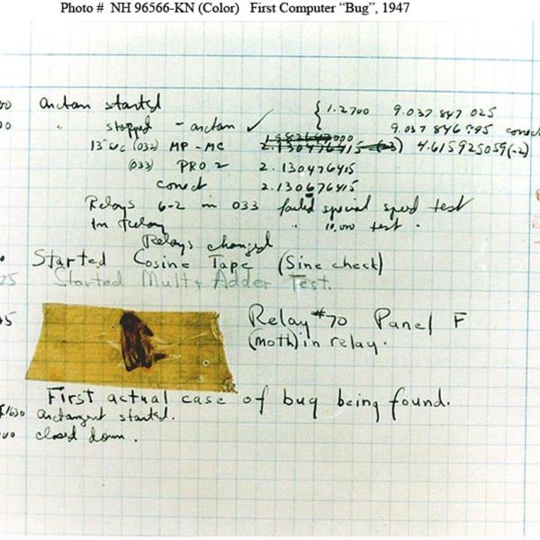

Quiz re-grading will be available early next week.
Extensive reading has been assigned on today’s topic of testing.
Today’s Agenda
Testing
Debugging
Exceptions
Assertions
Introduction to Testing
Purpose of Testing
Testing is a critical process in software development aimed at ensuring that a program performs as intended.
It involves executing the program with artificial data to identify any errors, anomalies, or non-functional attributes.
Testing is part of a broader verification and validation process, which includes both dynamic and static validation techniques.
Goals of Software Testing
To affirm that software meets its defined requirements.
To uncover any behavior of the software that is incorrect, undesirable, or not in accordance with its specifications.
Defensive Programming
Function Specifications: Clearly define what each function does, its inputs, outputs, and side effects.
Modular Design: Structure your program into distinct, coherent modules.
Input/Output Assertions: Utilize assertions to enforce conditions on inputs and outputs, ensuring they meet expected criteria.
Constraints
Clearly define what inputs each module expects. Specify the expected outputs for given inputs. This documentation serves as a contract, guiding both development and testing efforts.
Assumptions
Make explicit any assumptions that have influenced the design of your code. This includes assumptions about data formats, operational environments, or user interactions.
Testing and Validation
Specs Comparison: Evaluate if input/output pairs adhere to the specified function or module behaviors.
Problem Identification: Adopt the mindset of “It’s not working!” to actively seek out problems.
Challenge Your Code: Ask, “How can I break my program?” to identify vulnerabilities or logic errors.
Debugging Strategies
Error Investigation: Analyze the sequence of events leading up to a known error.
Diagnostic Questions: Engage with questions like “Why is it not working?” to understand the root cause.
Solution Exploration: Think in terms of “How can I fix my program?” focusing on corrective actions and improvements.
Code Coverage
Code coverage is a metric used to evaluate the extent to which the source code of a program has been executed during testing. It provides insights into the thoroughness of the testing process and identifies areas that have not been exercised.
Code coverage has become a mainstream metric for code quality that helps teams maintain their code.
100% code coverage is not always feasible or necessary, but it can be a useful goal for ensuring comprehensive testing.
Code Coverage: Types
Line Coverage: Measures the percentage of lines of code that have been executed.
Function Coverage: Measures the percentage of functions or subroutines that have been executed.
Branch Coverage: Measures the percentage of decision points in the code that have been executed. (also known as Decision Coverage)
Path Coverage: Measures the percentage of paths through the code that have been executed.
Example: SQLite
SQLite is a C-language library that implements a small, fast, self-contained, high-reliability, full-featured, SQL database engine. SQLite is the most used database engine in the world. SQLite is built into all mobile phones and most computers and comes bundled inside countless other applications that people use every day.
Example: SQLite (Contd.)
The reliability and robustness of SQLite is achieved in part by thorough and careful testing.
As of version 3.42.0 (2023-05-16), the SQLite library consists of approximately 155.8 KSLOC of C code. By comparison, the project has 590 times as much test code and test scripts - 92053.1 KSLOC.
Test-Driven Development (TDD)
Test-Driven Development (TDD) is a software development process that relies on the repetition of a very short development cycle: first the developer writes an (initially failing) automated test case that defines a desired improvement or new function, then produces the minimum amount of code to pass that test, and finally refactors the new code to acceptable standards.
Classes of Testing
Unit Testing
Purpose: Validate individual components of a program to ensure each functions correctly in isolation.
Approach: Focus on testing each function or method separately.
Regression Testing
Bug Tracking: Each time a bug is identified, add a specific test case to prevent future regressions.
Error Prevention: Aims to catch errors that were previously fixed but have been reintroduced through new changes or updates.
Integration Testing
System Cohesion: Verifies that the overall program operates as intended when components are integrated.
Common Pitfalls: There’s a tendency to rush integration testing due to eagerness to see the entire system working together.
Usability Testing: Evaluates user interface and experience.
Testing Approaches
Overview
Various testing strategies, such as white box, black box, and gray box testing, are employed to evaluate different aspects of software functionality. This module explores these testing methodologies, providing insights into their applications, benefits, and real-world use cases.
White Box Testing
White box testing, also known as clear, open, or glass box testing, is a method where the tester has full visibility of the internal workings of an application. This type of testing is not just about identifying errors in code; it’s a comprehensive analysis that includes:
Code Walkthroughs: Methodically examining code to ensure adherence to quality standards and to spot potential problems early.
Control Flow Analysis: Analyzing the program’s control flow to detect logical errors and unreachable code.
Data Flow Analysis: Monitoring how data is processed and transferred within the application, helping to identify data-related issues.
To test this function effectively, one would write tests covering each control path: numeric input, alphabetical input, and invalid input.
Path Coverage
Path coverage, a core concept in white box testing, ensures every possible route through a program’s code is tested. This is critical for identifying bugs that might not be evident through other testing methods. Achieving complete path coverage guarantees that all conditional branches and loops are evaluated.
Achieving Full Path Coverage
For complex applications, achieving 100% path coverage can be challenging due to the exponential increase in possible paths with each new conditional or loop. Techniques such as loop bounding and condition coverage can help manage this complexity.
Black Box Testing
Black box testing focuses on the external functionality and performance of a software application, without any knowledge of its internal workings. This method simulates the end-user experience to ensure the application meets its requirements.
Functional Testing: Verifying the software functions as expected against the defined specifications.
UI Testing: Testing the graphical user interface for intuitiveness, responsiveness, and compliance with design guidelines.
API Testing: Assessing the reliability, performance, and security of application programming interfaces.
This snippet tests whether an API endpoint is accessible and responding with the correct HTTP status code.
Gray Box Testing
Gray box testing is a hybrid approach that blends the external focus of black box testing with the internal insight of white box testing. Testers have partial access to the internal structures, enabling more effective identification of issues, especially in integration and system-wide tests.
Hybrid Approach: Utilizes both functional testing techniques and knowledge of internal structures.
Integration Testing: Verifies that different components of the application work together as intended.
Modular System Testing: Focuses on assessing the functionality and compatibility of individual modules.
Example: Integration Testing with Mocking
Using Python’s unittest.mock to simulate the behavior of complex dependencies:
Mock objects allow for the testing of integration points without requiring the actual dependencies to be in place.
Natural Boundaries and Partitions
Testing strategies often start by identifying natural partitions within the problem domain, such as different input types or expected output ranges. This approach relies on domain knowledge to delineate these partitions clearly.
Example: Parition Testing
Consider a function that calculates the square root of a number:
def calculate_sqrt(number):if number <0:return"Error"else:return number **0.5
We know that the square root of a negative number is undefined, so we can create test cases for both positive and negative input, and the boundary case of zero.
Random testing, while less targeted than partition-based testing, serves as a complementary strategy by introducing unexpected inputs that could reveal rare or overlooked issues.
Incorporating random inputs in test suites can expose edge cases not covered by conventional testing methods, potentially uncovering hidden bugs.
Example: Testing with Random Inputs
Consider a function that checks if a number is even:
def is_even(number):return number %2==0
To test this function with random inputs:
import unittestimport randomclass TestIsEven(unittest.TestCase):def test_is_even_random(self):for _ inrange(100): # Generate 100 random test cases num = random.randint(-1000, 1000) # Random number between -1000 and 1000 expected_result = num %2==0withself.subTest(num=num):self.assertEqual(is_even(num), expected_result)
Debugging
Why is it called a “bug”?
The term “bug” originated from an incident involving the Harvard Mark II computer in 1947. This incident popularized the term “bug” in the context of software defects.

Debugging: An Essential Skill
Debugging in software development is a critical skill that demands patience, a systematic approach, and a deep understanding of various debugging tools. The main objective in debugging is to locate and rectify errors within the code, thereby enhancing the stability and reliability of the software.
Essential Tools and Techniques for Debugging
Debugging involves a suite of tools and techniques designed to uncover and fix bugs efficiently:
Integrated Development Environments (IDEs): Tools such as IDLE and Anaconda provide comprehensive debugging features, including breakpoints, variable inspection, and step-through execution capabilities.
Visualization Tools: Tools like Python Tutor offer a visual representation of code execution, aiding in the comprehension of data flow and control structures.
Print Debugging: Inserting print statements at strategic points in the code can help illuminate the program’s state at critical junctures, aiding in forming hypotheses about the nature and location of bugs.
Analytical Approach: A methodical problem-solving strategy involves breaking down the issue into smaller, more manageable components and examining each piece systematically.
Print Statements
Print statements, though basic, are a potent tool in the debugging arsenal, facilitating an easy verification of the program’s execution flow and data state at various stages.
Strategic Placement:
Insert print statements at the beginning of functions to confirm the flow of execution.
Place them around variable assignments and before function returns to inspect the state of data.
Bisection Method: Employ print statements in the midpoint of the code region under suspicion. Adjust the location of these statements based on the output to either narrow or widen the search area for the bug.
Print Statements (contd.)
Don’t leave print statements in the code after debugging is complete. Instead, consider implement logging libraries like Python’s logging module to record program events systematically, providing a more structured alternative to print statements.
Conditional Logging: Utilize conditional logging to enable or disable logging based on the program’s state or user-defined settings.
import logginglogging.basicConfig(level=logging.DEBUG)logging.debug("This is a debug message")
Systematic Debugging Process
Treat debugging as a scientific process, prioritizing a thorough understanding of the problem before attempting to rectify it.
Code Review: Rather than focusing solely on what is wrong, consider how the program arrived at the unexpected result, and ponder whether the issue represents a broader problem class.
Systematic Debugging Process (contd.)
Scientific Method Applied:
Analyze the data available (error messages, program outputs, etc.) carefully.
Formulate hypotheses regarding the bug’s cause.
Experiment by altering code or inputs and observing the results.
Simplify the issue by using the simplest input that still reproduces the bug.
Interpreting Error Messages
Error messages are vital clues that can help quickly identify and resolve issues within the code. Familiarity with common Python error types is essential:
IndexError: Occurs when there’s an attempt to access an element outside the valid index range in sequences like lists.
TypeError: Triggered by applying an operation or function to an object of an inappropriate type.
NameError: Arises when trying to access a previously undefined variable.
SyntaxError: Results from violations of Python’s syntax rules, such as missing parentheses or incorrect quotation marks.
Addressing Logic Errors
Logic errors, which result in incorrect outcomes without always triggering error messages, represent some of the most challenging debugging scenarios.
Strategies:
Visualization: Utilize diagrams or flowcharts to better grasp the program’s logic.
Peer Review: Explaining your code to another person or an inanimate object (the “rubber duck” method) can help in identifying overlooked mistakes.
Debugging DOs and DON’Ts
Adhering to best practices in debugging is crucial for effective and efficient problem resolution.
DO: - Incrementally develop, test, and debug functions to ensure their correctness before integration. - Maintain a backup of your code prior to implementing changes. - Document your bug-related hypotheses in comments for future reference.
DON’T: - Avoid attempting to write and debug the entire program in one go; this approach is often counterproductive. - Refrain from altering code without adequate testing or documentation, as this can lead to further confusion and errors. - Do not panic; debugging is a challenging yet surmountable aspect of software development.
Exceptions
Fundamentals of Exception Handling
Exception handling is a foundational concept in software development, crucial for crafting resilient and stable applications. It equips developers with the tools to manage runtime errors effectively, ensuring that programs can recover from unforeseen issues gracefully, without crashing. This section delves into the mechanics of exception handling, illustrating its importance through Python examples.
What Are Exceptions?
Exception handling mechanisms provide a structured response to runtime errors, allowing programs to address these issues without halting execution abruptly.
Definition: An exception signals that an unusual or unexpected event has disrupted the normal flow of program execution.
Handling: Effective management of exceptions ensures that programs can mitigate or recover from these events gracefully.
Python Exceptions
Python classifies various error conditions into distinct exceptions, aiding in targeted error handling.
IndexError: Triggered by accessing an index outside a list’s bounds.
numbers = [1, 7, 4]numbers[4] # Raises IndexError
TypeError and ValueError: Result from using inappropriate types or values.
NameError: Occurs when an undefined variable is used.
print(variable) # Raises NameError if `variable` is undefined
Python Exceptions (Contd.)
SyntaxError: Arises from incorrect syntax.
AttributeError: Occurs when attribute references or assignments fail.
IOError (or OSError in newer versions): Related to input/output operations, e.g., file not found.
Other exceptions include KeyError, ImportError, StopIteration, and more.
Strategies for Handling Exceptions
Adopting effective exception handling strategies enhances the reliability and user experience of software.
Basic Handling with try and except
A foundational technique involves the use of try and except blocks to manage potential exceptions.
try:# Code that may raise an exception result = some_operation()except SomeException:# Code to handle the exception handle_the_exception()
Encapsulate risky code in a try block, followed by except blocks to handle specific exceptions.
Best Practices
Adhering to best practices in exception handling ensures more maintainable and user-friendly applications.
Specificity: Catch specific exceptions to avoid hiding other, unexpected errors.
Logging: Record exceptions to aid debugging and maintenance.
User Communication: Offer clear feedback to the user on errors resulting from their actions.
Advanced Handling Techniques
Sophisticated exception handling mechanisms provide additional flexibility and robustness.
Multiple except Blocks: Different exceptions can be handled in distinct manners.
finally Block: Executes code irrespective of the try and except block outcomes.
Raising Exceptions: Deliberately triggering an exception with raise can signal an error condition has occurred.
Assertions
Assertions in Software Development
Assertions play a critical role in defensive programming, a technique aimed at ensuring the reliability and correctness of software by actively checking for possible errors.
Purpose: Assertions are used to enforce the assumption that the program’s state matches the developer’s expectations at specific points during execution.
Behavior: When an assertion fails (i.e., the assumption is not met), an AssertionError exception is raised, effectively halting the program unless the exception is caught and handled.
Application: This mechanism is particularly valuable for identifying logical errors and incorrect assumptions made during the development process, acting as an internal self-check mechanism.
Best Practices for Using Assertions
While assertions are powerful tools for maintaining software quality, they are best used with careful consideration.
When to Use Assertions:
To ensure that function inputs meet certain criteria
To verify that invariants (conditions that should always be true) hold throughout the program’s execution.
To confirm the correctness of a function’s output based on the given input.
To prevent the propagation of corrupt data throughout the system.
Limitations and Considerations:
Assertions should not replace proper input validation or error handling intended for end-users.
They are typically disabled in production environments (by running Python with the -O flag), so they should not be used for critical checks that must always be enforced.
Example: Using Assertions to Validate Inputs
Consider the function avg that calculates the average of a list of grades. The assertion ensures that the function does not proceed with an empty list, a common source of errors in calculations involving averages.